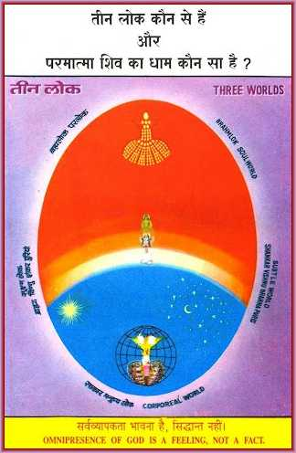

The Mystery of Three Worlds revealed
In order to know the original Abode or Home from where the soul has come, it is necessary to have the knowledge of the Three Worlds. The Supreme Soul, you might know, is praised as the ‘Lord of the Three World’s (Trilokinath). But do you know which those three Worlds are and from which one of these has the soul come to appear on the stage of this our world?
The Corporeal World - At the bottom of this illustration, you will find human world in the form of an inverted tree. This world exists in a very very small portion of ether. This is called the world of ‘Human Beings’. This is also called the Gross World, the Corporeal World or the Karma Kshetra (the field for action) or a huge Drama Stage because when the soul enters into this world, it wears a terrestrial or gross body of flesh and bones; it acts here and plays a happy or sad part. The soul reaps as it sows; it gets as it acts. Birth and death, pleasure and pain, good and bad actions, thoughts and words and sound—all these are to be found in this world. Always, without break, a Movie-talkie World Drama is enacted here.
The Subtle World - Beyond the sun and the stars of this Human World, beyond the highest expanse of ether, there is a world where Brahma, Vishnu and Shankar abide in their respective subtle regions. This is called the Subtle World, i.e., the world of the deities, because the deities, that dwell there, have not like us, the gross bodies but subtle, self-luminous bodies which cannot be seen with the gross or physical eye. That world can be seen only with the divine eye. There is no birth or death, no pain, neither speech nor sound. There they speak, but without making any sound. There is only motion; that is a Movie World and no talkie.
Paramdham(The Incorporeal World) - Beyond the subtle world, there is another world, which is called by different names—Paramdham (The Supreme Abode), Brahmaloka or Parloka(The Highest World). Here, there is neither any gross body nor any subtle one, neither thought nor word nor action. Therefore, there is neither pain nor pleasure, neither birth nor death. There is Peace and Peace alone. Hence it is called Shantidham (the World of Peace). Muktidham (the Abode of the Liberated), Nirvanadham (the World of the Released). There is a subtle Light which pervades that world and is called ‘Brahm’. That Light is not conscient but is the sixth element of non-living Matter; it is above Satoguna, Rajoguna or Tamoguna-the three modes of Matter.
The Supreme Soul, i.e., the Supreme Father Shiva, who Himself is eternal and unborn and who knows all about the wheel of soul’s transmigration and the Three aspects of time, has revealed to us the great truth that beyond the sun and the stars, there in Brahmlok in the infinite divine light called Brahm souls abide in incorporeal form as detached from the bodies and above birth and death and pleasure and pain, without any thoughts and, in a state which is called the state of Redemption (Mukti). It is from there that souls come to the theatre, that is the world, to play their respective parts and they put on bodies like actors put on their costumes. Just as a Meteor falls on the earth, so does the soul leave Muktidham and enter this world when it thinks of enjoying itself in this world. It takes a gross body inside the mother’s womb as its perch. When it takes physical birth and performs actions, it reaps the fruit thereof as time goes.
Nirakar Param Pita Paramatma

The term ‘Supreme Soul’ (Paramatma) means that He is the supreme among all souls. It implies that He also is ‘a soul’, though He is the Highest of all. About Him, it is said that He is above birth and death. Clearly, therefore, this cannot be said about any being who has a body, whether a human body or the one that belongs to some other species. Moreover, He is the Supreme Father of all. Now He, who is the Father of all, must have no father. So, the fact that He is known as the Supreme Father also points out that He does not have a body. Since He is incorporeal, that is why it is said that He has no ears but He hears, He has no physical eyes but He can see and He has no feet and yet He moves or walks.
Also, that’s the reason why all people say that God is Light, a Jyoti(Effulgence personified) or Noor (a self-luminous object). But they do not know what form that Light has. Today, I wish to tell you on the basis of my experience that, just as a soul is a point-of-light (Jyoti Bindu), even so the Father of souls i.e., the Supreme Soul also is a point-of-Light (Jyoti Bindu). There is difference between Him and the other souls in respect of qualities. God is changeless, being the Ocean of Peace, bliss and love. He is above birth and death and is immune to pleasure and pain, whereas the other souls are in the vortex of birth and death and pleasure and pain. But, in form, the soul and the Supreme Soul are alike even as we find that, in this gross world, the young one and its parents have the same form, a child has the same human form as resembles the form of its parents. So, let it be clear in the mind that God is not formless but is like the souls, a point-of-Light.
The Divine Name of God
You may please note that the name God has, is based on His qualities and actions. His main and self-revealed name is—‘Shiva.’ ‘Shiva’ means: ‘doer of good’. God does good to all and, therefore, is called—Shiva. All souls ask for salvation and beatitude, i.e., peace and happiness from Him. People remember Him by other expressive names, among which, Papkateshwara (The Destroyer of sins), Mukteshwara, (The Lord Redeemer), Amarnath (The Father of souls), Somnath (Giver of Soma i.e. Elixir), Maha-Kaleshwara (The Destroyer of the world) are special ones. ‘Shiva’ and other names tell us about His qualities and the relationship we have with Him.
Divine form of GOD
When a lamp is lighted or a candle is burning, the form of the flame or the light emitted is like that of an egg, i.e., Shiva Linga. Even so, God is a Divine Flame; He has a form which is subtler than the subtlest. We cannot see it with the physical eye. It needs the divine eye to see it. All seeds and eggs, i.e., all the ‘creators’ also have oval forms. So, God, who is the creator or the conscient Seed of this Human World-Tree, also has an extremely subtle and minute, seed-like form, i.e., He is an oval point of Light.
The real meaning of the word ‘Nirakar’
The beings who have gross body as men and women have, are known as `Sakar’ or `corporeal’ beings. The deities Brahma, Vishnu and Shankar who are eternal, i.e., who have self-luminous or angelic body are, called `Sukshmakari’ i.e. Subtle, Angelic or Astral in form and Shiva, the Incorporeal Being is such a soul that it has neither a gross nor a subtle body, and, is therefore, relatively called `Nirakar’. So, Nirakar is one who does not have the physical form or one who has no outline as of a body. In English terminology, the equivalent of the word `Nirakar’ is `incorporeal’ or `non-anthropomorphic’, i.e., one who does not have the form of a human body or limbs, but is bodiless. So, though without a bodily shape, God has His own imperishable form, which is a point-of-Light, whose gross and enlarged representation is Shiva-Linga